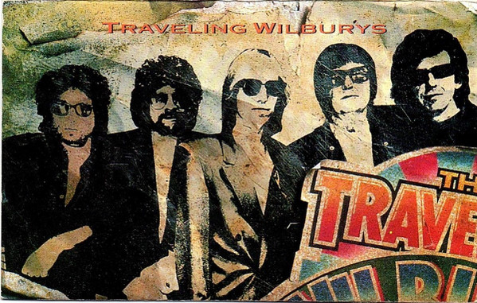

CASSETTE
Volume One
Traveling Wilburys
Media: — · Sleeve: —
—
Personal
Discogs SuggestedCA$15.32
Discogs MedianCA$15.32
Discogs HighCA$15.32
- Physical Copy ID
- BB-CAS-328
- Year
- 1988
- Label
- Wilbury Records, Wilbury Records
- Catalog #
- 9 25796-4, 4-25796
- Country
- USUS
- Genre / Style
- Rock · Rock & Roll, Pop Rock, Classic Rock, Country Rock, Folk Rock